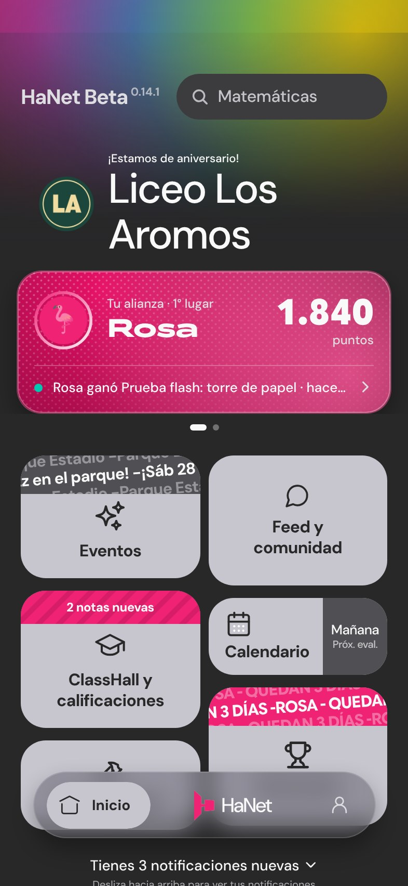

Avisa a toda tu comunidad en segundos, organiza eventos con entradas y ordena el año escolar, con docentes y estudiantes conectados en un solo lugar.

En esta guía
Empieza aquí2
Eventos y entradas5
Tu institución en el panel3
Clases, horario y días sin clases6
Comunica4
Seguridad y privacidad7
Equipo HaNet · muxp@muxp.art · docs.hanet.muxp.art1 de 7
Guía para directivos
1 Empieza aquí
Prepara tu liceo
En HaNet, la dirección, inspectoría y quienes administran el liceo tienen el rol Admin: todo lo de su institución, en la app y en el panel web. Ese rol lo asigna el equipo de HaNet.
1
Activa tu cuentaCrea tu HaNet ID en app.hanet.muxp.art, escribe el código de invitación de tu liceo y vincula tu correo institucional.
2
Entra al panel webEn panel.hanet.muxp.art, con tu misma cuenta y un segundo paso. Revisa que la nómina y los cursos estén correctos.
3
Fija el año escolarEl primer y último día de clases, y desde cuándo corre el 2° semestre.
4
Da roles a tu equipoDocentes, CEE y la directiva de cada curso, en Personas y roles.
5
Invita a tu comunidadComparte el código de invitación en clases o por los canales del liceo, nunca en redes públicas. ¡Y ya están todos dentro!
Dónde se hace cada cosa
App: Organizar
Lo de cada día, desde el botón Organizar del Inicio: notificaciones, avisos, votaciones, eventos, entradas y días sin clases.
Panel web: Mi institución
El trabajo de escritorio: personas y roles, nómina, código de invitación, año escolar y listas de inscritos para Excel.
Abre HaNetapp.hanet.muxp.art
Panel webpanel.hanet.muxp.art
Guía completadocs.hanet.muxp.art
Equipo HaNet · muxp@muxp.art · docs.hanet.muxp.art2 de 7
Guía para directivos
2 Tu institución en el panel
Tu comunidad, en orden
En el panel web, Mi institución reúne a las personas de tu liceo, quién puede hacer qué y cómo se vive el año escolar en HaNet.
Panel web
Personas y roles
Busca por nombre, curso, correo o rol. Nombra docentes, CEE, directivas de curso y estudiantes, y desvincula a quien deja el liceo. Cada cambio de rol le llega a la persona como alerta.
Cargar nómina
Pega la lista desde tu planilla: RUT, nombres, apellidos, curso y correo. Docentes y administración van con el curso "Docente". Al volver a cargarla, las filas que ya estaban se actualizan.
Código de invitación
Las cuatro palabras con las que tu comunidad se une. Si se pierde o se filtra, genera otro: el anterior deja de funcionar al instante y quienes ya entraron siguen igual.
Módulos
Revisa qué módulos tiene activos tu liceo (Notas, Entradas, Feed, Aniversario…). Para activar o apagar uno, escríbenos: el cambio rige al instante.
Año y cierre
Año escolar
El primer y último día de clases, y el inicio del 2° semestre. Con eso, Notas corta bien los semestres y el resumen del día no llega en vacaciones.
Cerrar HaNet en tu liceo
¿Estás preparando el año o hay un problema? Cierra HaNet solo en tu liceo, ahora o en una fecha, hasta que lo abras, hasta que empiecen las clases o hasta un día que elijas. Puedes dejar entrar a los docentes para que armen sus Halls.
La nómina tiene datos de menores de edad. Compártela solo con el equipo de HaNet y por un medio privado. Casi todos los problemas para entrar se arreglan en ella: un correo mal escrito o un curso con otro nombre.
Equipo HaNet · muxp@muxp.art · docs.hanet.muxp.art3 de 7
Guía para directivos
3 Comunica
Avisa a quien corresponde, al instante
¿Cambio de sala, una citación o un recordatorio? Envía una notificación desde Organizar y queda guardada en las Notificaciones de cada persona, aunque tenga los avisos apagados.
App
Puedes enviarla a
Todo el liceo o una jornada, y si quieres, también a docentes y administración
Algunos cursos
Los Presidentes de curso o las directivas
Un grupo guardado, como "Seleccionados de fútbol"
Estudiantes elegidos uno por uno
Hasta 200 caracteres. Al tocarla puede abrir el Calendar o un evento.
Sale a nombre de la Comunidad del liceo, no de una persona. En Enviadas ves quién envió cada una.
Antes de enviar, HaNet pregunta "¿Enviar a N personas?". Una notificación enviada no se borra.
Hasta 30 al día desde la administración y 5 desde el CEE.
El Feed, con los Espacios del liceo, del CEE y de cada curso.
Feed del liceo
Publica comunicados en la Comunidad del liceo, para todo el liceo, una jornada o algunos cursos: texto con formato, hasta 6 imágenes y tags. Fíjalos arriba o envíalos como notificación.
Si tu liceo activa Feed
Votaciones anónimas
Pregunta a tu comunidad y elige si los resultados se ven al votar o al cerrar. Nadie puede ver qué votó cada persona: ni el liceo ni HaNet.
Si tu liceo activa Votaciones
Equipo HaNet · muxp@muxp.art · docs.hanet.muxp.art4 de 7
Guía para directivos
4 Eventos y entradas
Del patio a la gala de graduación
¿Tienes una actividad en el patio, una charla o una feria? Publícala en Eventos. ¿Una gala o una velada? Emite entradas con QR y sigue en vivo quiénes llegaron y quiénes no.
AppPanel web
Eventos del liceo
Para todo el liceo o una jornada.
Inscripción con lista (nombre y curso), solo contador o sin inscripción, con cupo si quieres.
Descarga los inscritos para Excel desde el panel web.
Pasa lista escaneando el HN-QR de cada estudiante: cambia cada 30 segundos, así que una captura no sirve.
Eventos privados con entradas
Solo lo ven quienes tienen entrada. Estilo simple, con el logo o formal.
Emite por curso, a cada estudiante o al Presidente de cada curso para que las reparta.
Invita a alguien de fuera con un link, sin que cree una cuenta.
En la lista ves cada entrada: por llegar, llegó, regalada, impresa o anulada.
Si tu liceo activa Entradas
El día del evento
1
"Hoy organizas"Desde 3 horas antes, tu Inicio muestra el conteo de llegadas en vivo y el botón Escanear.
2
Escanea en la puertaEl teléfono suena y vibra: un sonido si la entrada es válida y otro si no sirve o ya se usó.
3
Suma docentes a la puertaEn el evento, "Docentes que escanean" autoriza a docentes para escanear contigo.
Presidentes de curso: nómbralos en Organizar → Cursos y clases. Reciben las entradas de su curso y también puedes enviarles notificaciones solo a ellos.
Una entrada, como la ve tu estudiante.
Equipo HaNet · muxp@muxp.art · docs.hanet.muxp.art5 de 7
Guía para directivos
5 Clases, horario y días sin clases
Un solo cambio, y todo se ajusta
Haz que tus estudiantes no se pierdan ninguna evaluación, actividad o tarea. Y cuando el día cambia, HaNet lo refleja en todas partes.
Días sin clases
Solo la administración puede marcarlos, desde el Calendar u Organizar, para todo el liceo o algunos cursos y con un motivo breve.
Al marcar
Qué pasa solo
Suspensión de clases
Las clases del día quedan tachadas y las evaluaciones pasan a la siguiente clase de la misma asignatura. Si quieres, avisa al instante a los cursos afectados.
Salida anticipada
Una línea marca la hora de salida, y el resumen del día y los widgets dicen "Hoy sales a las 12:30".
Horario de cada curso
Arma o corrige el horario del plan común de cualquier curso, con recreos y almuerzo. Con él llega a cada estudiante el resumen del día, con el clima, sus pruebas y su primera clase.
ClassHall y Notas
Los docentes publican material, evaluaciones con su T.E. y tareas, y suben notas que cada estudiante destapa en pantalla completa. Tú también puedes crear Halls y poner o publicar notas.
Aniversario
La semana de alianzas en la app: marcador en vivo, actividades con puntos, plazos y pruebas flash. Lo organizan el CEE y la administración.
Si tu liceo activa Aniversario
HaNet Electividad
Un test de intereses para que tus estudiantes de 2° medio elijan sus electivos con más información. Ver los resultados de todo el liceo en el panel: próximamente.
Si tu liceo activa Electividad
Equipo HaNet · muxp@muxp.art · docs.hanet.muxp.art6 de 7
Guía para directivos
6 Seguridad y privacidad
Los datos de tu liceo, cuidados
HaNet es para la comunidad escolar: sin funciones sociales entre estudiantes y con cada acción revisada en el servidor, no solo escondida en la app.
Panel con segundo paso
Después de la contraseña, el panel siempre pide un código por correo, de una app de autenticación o de respaldo. Una contraseña filtrada no basta para abrir los datos del liceo.
Alertas de cuenta
Un inicio de sesión desde un dispositivo nuevo, una contraseña o un correo cambiado, o un cambio de rol: a la persona le llega una alerta. Puede cerrar sesión en todas partes.
Qué
Quién lo ve
Una nota
El estudiante, su docente y la administración de su liceo.
Una entrega de tarea
Su autor y el docente.
Un voto
Nadie. HaNet solo guarda que esa cuenta ya votó.
La foto de perfil
Solo su dueño. Los demás ven un avatar ilustrado.
Los inscritos de un evento con lista
Quienes lo organizan.
Base de datos en Santiago
Las bases de datos de HaNet están en Chile.
Sin redes sociales
Nada de chats, seguidores ni publicaciones entre estudiantes.
Libro de clases
HaNet no lo reemplaza todavía: llega después de la beta.
¿Tienes ideas, quejas o encontraste algún error? ¡Avísanos en muxp@muxp.art! La guía completa está en docs.hanet.muxp.art, y el estado de HaNet y las mantenciones, en status.hanet.muxp.art.
Equipo HaNet · muxp@muxp.art · docs.hanet.muxp.art7 de 7